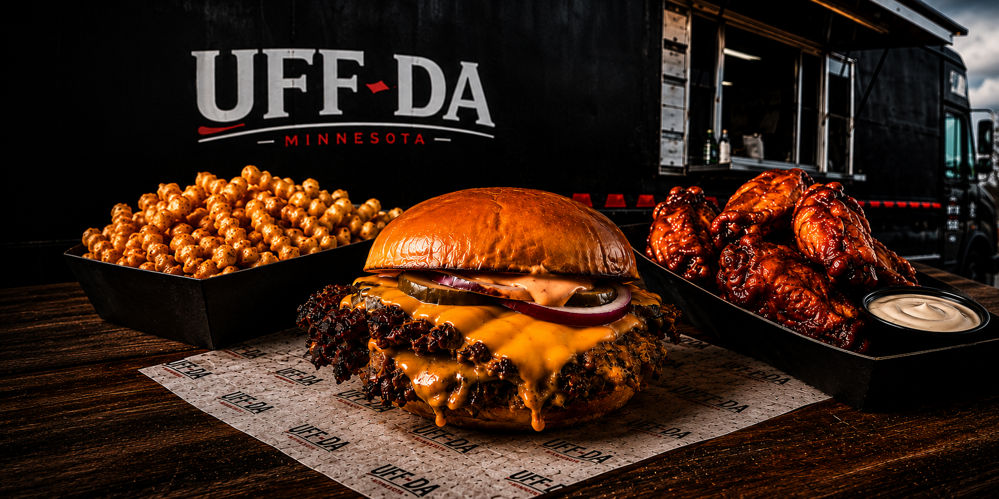

Smash Burgers
Crispy edges, juicy centers, stacked with flavor.

Smash burgers, bold wings, and loaded fries
made with real ingredients and big flavor.
Crispy edges, juicy centers, stacked with flavor.
Dry-rubbed or sauced. Bold flavor in every bite.
Crispy fries with craveable toppings and sauces.
Local at heart. Serving Minnesota with pride.
UFF-DA is a Minnesota food truck centered on hard-seared smash burgers, wings with serious dry-rub and sauce options, and hot, crispy fries. Straightforward food, strong flavor, and a Midwest point of view.
The visual language stays focused on the food: seared beef, glossy wings, crisp fries, and the red-black-white identity that makes the truck recognizable from across the lot.
Locations and service times move. Follow UFF-DA on social for the current stop, specials, wing flavors, and what is coming off the griddle.